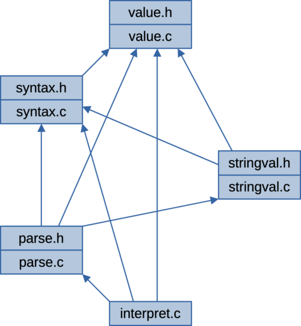
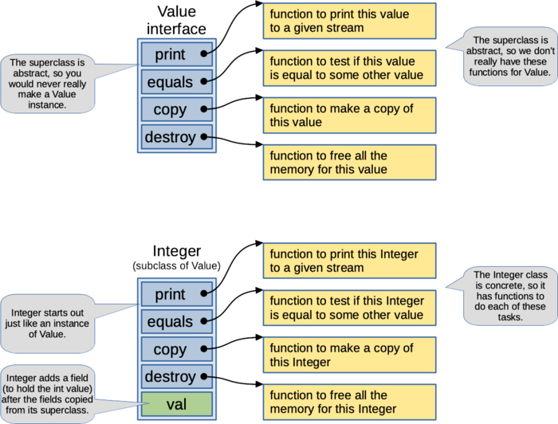
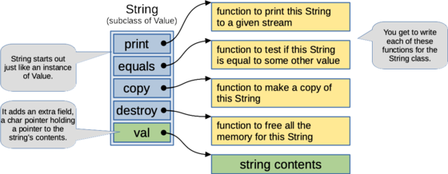
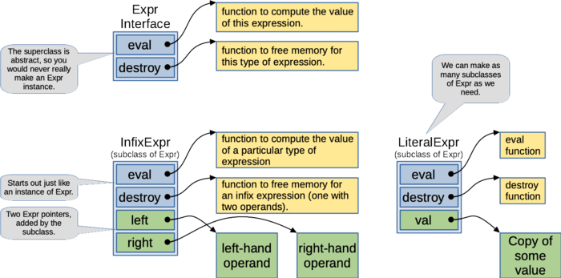
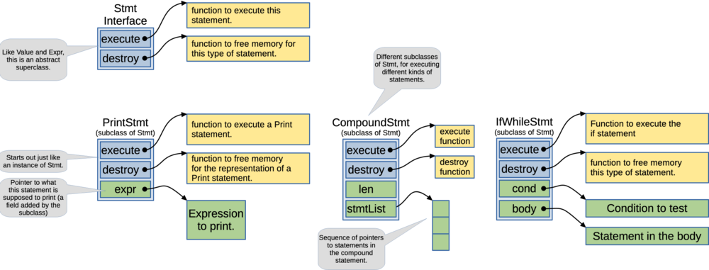
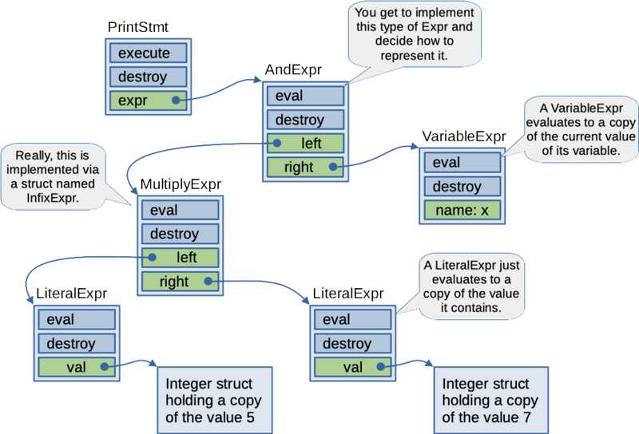

For this assignment, you get to write an interpreter for a simple
programming language. It will be able to run programs like the following
(prog-18.txt in the starter):
# Print out a triangle of * characters.
# Print ten rows.
i = 1;
while ( i < 11 ) {
# On each row, print i stars
j = 0;
while ( j < i ) {
print "*";
j = j + 1;
}
# Print a newline at the end of each row.
print "\n";
i = i + 1;
}You can run the interpreter on this program as follows:
$ ./interpret prog-18.txt
*
**
***
****
*****
******
*******
********
*********
**********Much of the work for this project is already done for you. In the starter, you’ll be getting code for an interpreter that can already run some simple programs. To complete the project, you’ll be adding support for string values (it already supports integers). You’ll be adding support for additional types of expressions and statements and implementing a way to keep up with the current value of all variables.
We’re providing you with a starter with a partial implementation of
the interpreter, test inputs and expected outputs, a
.gitignore file, and a simple Makefile. See the Getting Started section for instructions on how to
get the starter and unpack it into your repo.
You must complete this assignment individually. All code submitted for this assignment must be from the starter or written by you for this course. You are not permitted to use code that has been generated or obtained from sources other than course materials (class slides, the textbook, posted class examples), even if you modify this code before turning it in. If your editor is configured to write code for you (maybe using generative AI), you will need to disable these feature while working on this assignment. If you’re unsure what’s permitted, you can have a look at the academic integrity guidelines in the course syllabus.
You must complete this assignment using material covered in the lecture slides up to lecture 19. In particular, you’ll need the material in lecture 19 for how to implement objects and overridable methods in C. Please don’t go find other resources for implementing your solution. This will help you to practice using the C language and library features we’ve covered up to this point in the class, and it will help show that you wrote your own code.
In the design section, you’ll see some instructions for how your implementation is expected to work. Be sure you follow these rules. It’s not enough to just turn in a working program; your program has to follow the design constraints we’ve asked you to follow. For this assignment, we’re putting some constraints on the functions you’ll need to define, the data structures you’ll use and how you’re going to organize your code into components. Still, you will have lots of opportunities to design parts of your solution and to create additional functions to simplify your implementation.
The interpreter program is called interpret. As its
only command-line argument, it expects the name of a file containing the
source for the program it’s supposed to run. For example, you can run
the interpreter as follows to get it to run the program in the file,
prog-19.txt:
$ ./interpret prog-19.txtIf the user doesn’t give exactly one command-line argument, the program will print the following error message to standard error and terminate with an exit status of 1.
usage: interpret <program-file>If the interpreter can’t open the given input file, it will print the following error message to standard error (where filename is the filename given on the command line) then terminate with an exit status of 1.
Can't open file: filenameCode to process the command-line and read from the input file is already provided with the starter, but you will need to add the error-handling code.
Code for the tokenizer is already provided for you. It automatically skips over whitespace and comments. As in lots of scripting languages, comments starts with the # character and extend up to the end of the current line.
Tokens in our programming language can be any of the following:
Identifiers, like in C or Java, these are a sequence of digits, letters or underscores. They can’t start with a digit.
Integer values, a sequence of decimal digits, optionally starting with a - (for negative values).
String values that start and end with double quotes. As in C,
strings may use escape sequences for some special characters
(\t, \n, \" and
\\).
The two-character tokens, ==, && and ||.
Other than the cases above, any single, non-whitespace character is considered a token.
A token can be at most 1023 characters in length (so, it requires an array of at least 1024 characters).
Our language supports two types of values, integer values and string values. These are implemented using a little inheritance hierarchy (described in the design section). An integer value is stored as a signed, 32-bit int (the int type in C on the common platform). String values can be any sequence of ASCII characters.
For conditional expressions, the integer value of zero is considered false. Any other value, integer or string is considered true. So, the following loop would run for 10 iterations:
i = 10;
while ( i ) {
i = i - 1;
}The following code would print out the “hello world” message (since the string “world” isn’t considered false).
i = "world";
if ( i ) {
print "hello ";
print i;
print "\n";
}Values can be stored in variables during computation. A variable name
can be any identifier that’s no longer than 20 characters. Variables
can’t have the same name as a reserved word (e.g., print,
if or while).
All variables start out undefined. They don’t have a value until something is assigned to them. Variables behave as if they are global. Once a value has been given a value, it can be accessed from any part of the code.
Variables don’t have types, so any variable can hold any type of value (either Integer or String). Variables don’t be need to be declared before being used.
Imperative programming languages like C and Java usually make a distinction between expressions, and statements. Expressions are parts of the syntax that evaluate to some value (like 7 + 3 or 1 && 0). Statements are parts of the syntax that can be executed, but they don’t evaluate to any kind of value. Our language does this also. It supports 14 different kinds of expressions. Some of these are already implemented for you. The last three are optional. They are for extra credit.
literal value expressions
Example: 5
Example: -2007
Example: "abc"
Example: "Hello World\n"
Either integers or strings can be used as literal values. An integer is
any number that can be parsed using the %d conversion
specifier in scanf. A string literal is any sequence of ASCII characters
surrounded by double quotes. An empty string is also a legal string
literal. Literal values are already implemented for you, but they only
work for integers. When you add support for string values in the
language, you will also need to add support for string literals. Literal
values are already implemented in the starter.
variable expression
Syntax: varname
Example: x
Example: sandwich
A variable expression is simply the name of any variable. This is used
for when a variable is part of an expression. It evaluates to the
current value of that variable. If the program tries to evaluate a
variable that doesn’t have a value (i.e., it has never been assigned a
value), the program should print a line to standard error saying
“Undefined variable: v” (where v is the name of the variable
that didn’t have a value) and terminate with an exit status of 1.
Variable expressions are implemented in the starter, but they won’t work
until you complete the implementation of the Environment.
add expression
Syntax: op1 + op2
Example: 7 + 15
Example: 3 + ( x * 2 )
Like in C, an add expression is written as an infix operator, with an
operand expression on either side.
When evaluated, it evaluates its operands. If its left and right
operands both evaluate to integers, it should evaluate to their sum. If
not, it should print the line “Expected Integer value” to standard error
and terminate with an exit status of 1. Add expressions are already
implemented in the starter.
subtract expression
Syntax: op1 - op2
Example: 10 - 3
Example: x - ( y / 3 )
A subtract expression is like an add expression, but it evaluates to the
value of its left-hand operand minus the value of its right-hand
operand. It requires integer operands and handles invalid operands the
same way as an add expression. You will need to add support for the
subtract expression.
multiply expression
Syntax: op1 * op2
Example: x * y
Example: 10 * ( 3 + b )
A multiply expression is like an add expression, but it evaluates to the
product of the values of its operands. It requires integer operands and
handles invalid operands the same way as an add expression. You will
need to add support for the multiply expression.
divide expression
Syntax: op1 / op2
Example: y / 2
Example: ( z + 1 ) / ( m + n )
A divide expression is like an add expression, but it evaluates to the
value of its left-hand operand divided by the value of its right-hand
operand. Division truncates, like integer division in C or Java. It
requires integer operands and handles invalid operands the same way as
an add expression. If the second operand evaluates to zero, it prints
the line “Divide by zero” to standard error and exits with an exit
status of 1.
less expression
Syntax: op1 < op2
Example: i < 5
Example: ( x + 3 ) < y
A less expression takes two expressions as operands. It requires integer
operands and handles invalid operands the same way as an add expression.
If the left operand evaluates to to an integer that’s less than its
right operand, then the less expression evaluates to 1 (true).
Otherwise, it evaluates to 0 (false).
equals expression
Syntax: op1 == op2
Example: name == "bill"
Example: x + 1 == y - 1
An equal expression takes two expressions as operands. If its two
operands evaluate to the same value, then an equals expression evaluates
to 1 (true). Otherwise, it evaluates to 0 (false). The equals expression
should work for any type of value. All values have an equals function
that lets you compare them against any other value. The == operator uses
this function to compare values, and it evaluates to 0 or 1 to indicate
whether they are equivalent.
or expression
Syntax: op1 || op2
Example: ( i < 5 ) || waiting
Example: ( x == "green" ) || ( x == "blue" )
An or expression interprets the value of its operands as truth values. A
value of 0 being false and any other value being true. If either operand
is true, then the or expression should evaluate to 1 (true). Otherwise,
it should evaluate to 0 (false). This expression should perform short
circuiting. If the left-hand operand evaluates to true, then it should
not evaluate the right-hand operand. The or expression
should work for any type of operands; they’re not required to be
integers.
and expression
Syntax: op1 && op2
Example: ( i < 5 ) && ( j < 10 )
The and expression is like the or expression, except it computes the
logical and function. It should evaluate to 0 (false) if either of its
operands evaluates to false (an integer value of 0). Otherwise, it
should evaluate to 1 (true). Like the or expression, it should perform
short circuiting. If the left-hand operand evaluates to false, then it
should not evaluate the right-hand operand. The and
expression should work for any type of operands; they’re not required to
be integers.
parentheses
Syntax: ( expr )
Example: m * ( i + j + k )
Any expression can be put inside parentheses to alter precedence. This
causes the expression inside the parentheses to be evaluated before its
value is used as part of the surrounding expression. In the example
above, the sum of variables i, j and k will be computed before the
result is multiplied by m. Support for parentheses is already included
in the parser code in the starter.
strlen expression
Syntax: strlen( expr )
Example: strlen( "abc" )
Example: strlen( strVariable )
This expression is for extra credit. It is written like a function call.
It should evaluate to an integer giving the length of the string
parameter. For example, strlen( “abc” ) should evaluate
to 3. If the parameter doesn’t evaluate to a string (say, if it
evaluates to an integer), then the interpreter should print a line
saying ““Expected String value” to standard error and exit with an exit
status of 1.
cat expression
Syntax: op1 cat op2
Example: "abc" cat "xyz"
Example: str1 cat str2 cat str3
This expression is for extra credit. It is written like an infix
operator and it evaluates to the concatenation of its two string
operands. For example, “abc” cat “xyz” should evaluate
to the string “abcxyz”. If either of the parameters doesn’t evaluate to
a string (say, if it evaluates to an integer), then the interpreter
should print a line saying ““Expected String value” to standard error
and exit with an exit status of 1.
substr expression
Syntax: substr( str, start, end )
Example: substr( "Hello World!", 6, 11 )
Example: substr( strVariable, i, j )
This expression is for extra credit. It is written like a function call
with three, comma-separated parameters. It works like the substring
method on the Java String class. It should evaluate to a substring of
the first parameter, starting at the start index given by the middle
parameter and ending right before the end index given by the last
parameter. Indices start at zero, the index of the first character of a
string. So, for example, substr( “Hello World!”, 6, 11 ) should evaluate
to the string, “World”. The first parameter must evaluate to a string.
If it evaluates to a different type of value, the interpreter should
print a line saying ““Expected String value” to standard error and exit
with an exit status of 1. The second and third parameters should
evaluate to integers. If they don’t, the interpreter should print the
line “Expected Integer value” to standard error and exit with an exit
status of 1.
Expressions in this language don’t respect the usual precedence of operators. Unless parentheses are used to alter the precedence, the operators just evaluate left-to-right. Thus, the following expression will add 1 and 2, multiply the result by 3, subtract 4 from that result and then divide the result by 5 (yielding 1).
1 + 2 * 3 - 4 / 5You can always add parentheses if you want to force a particular evaluation order:
1 + ( 2 * 3 ) - ( 4 / 5 )The language supports just five types of statements. These may contain expressions (or other statements), but, unlike expressions, a statement doesn’t produce a value when it’s executed. A few of these statements have already been implemented for you in the starter.
print
Syntax: print expr ;
Example: print "hello world\n";
Example: print x + 5;
The print statement contains an expression. When it’s executed, it
evaluates the expression and prints the resulting value to standard
output. Support for the print statement is provided in the
starter.
assignment
Syntax: varname = expr
;
Example: x = 5;
Example: y = "abc";
Example: z = z + 10;
An assignment contains a variable name (on the left) and an expression
(on the right). When it’s executed, it evaluates the expression then
sets the variable to the resulting value. Support for the assignment
statement is provided in the starter, but you will need to complete the
Environment implementation for it to work.
if statement
Syntax: if ( cond ) body
;
Example: if ( i < 10 ) i = i + 1;
An if statement contains a condition expression and another statement as
its body (typically, a compound statement). When it’s executed, it
evaluates the condition. If the condition evaluates to true, it executes
the body.
while statement
Syntax: while ( cond ) body
;
Example: while ( i < 1000 ) i = i * 2;
Syntactically, a while statement looks almost exactly like an if
statement, with a condition expression and a statement for the body.
When it’s executed, it evaluates the condition. If the condition
evaluates to true, it executes the body and then evaluates the condition
again. This repeats until the condition evaluates to false.
compound statement
Syntax: { stmt1
stmt2 … }
Example: { x = "hello\n"; print x; }
A compound statement is a sequence of zero or more statements inside
curly brackets. When executed, it just executes the sequence of
statements it contains in order from first to last. Support for compound
statements is provided in the starter.
The interpreter could encounter errors, either while reading in the input program or while the program is being executed. This section explains what to do when an error is encountered. Many of these errors are already handled in the starter, but you will need to add code to help detect these errors (e.g., uninitialized variables) or to detect errors in new code you add (e.g., bad parameter types for the string functions if you do the extra credit).
If the tokenizer encounters an error while trying to parse a token, it reports an error. The tokenizer uses a static global variable to keep up with the current line number in the input program. This line number is used in error messages during tokenization or parsing.
If the parser encounters invalid syntax, it should print out an error message like the following (where n is the line number in the input file where the error was detected) and the exit with an exit status of 1.
line n: syntax errorAfter a program has been parsed, it may encounter errors during execution. If the program uses a variable that has never been assigned a value, the interpreter should print the following line to standard error and exit with an exit status of 1. The v in this error message should be the name of the variable that was used without first being assigned a value.
Undefined variable: vSome types of expressions require integer operands (e.g., the arithmetic operators). If one of these operands doesn’t evaluate to an integer, your interpreter should print the following message to standard error and exit with an exit status of 1.
Expected Integer valueIf the program attempts to divide by zero, the program should print the following line to standard error and exit with an exit status of 1.
Divide by zeroIf you do the extra credit part of the assignment, then you will be implementing expression types that require a string as one of their operands (e.g., the first operand for substr). If one of these operands doesn’t evaluate to a string, your interpreter should print the following message to standard error and exit with an exit status of 1.
Expected String valueWith this project, you are getting a good bit of partial implementation. The tokenizer is already done for you, along with a definition for the abstract classes (structs containing function pointers) used to represent values, expressions and statements. Most of the parser code is already done, but you’ll need to add parser code for new syntax your adding: additional types of expressions, additional types of statements, literal strings and string operators if you do the extra credit.
The interpreter is defined in five components. One of these (the top-level, main component) just has an implementation file, and the other four have header and implementation files.
value.c and value.h
This component provides Value, the abstract class for representing
values. It provides the Integer subclass of Value (for representing
Integer values). It will also provide an implementation of the
Environment, a representation of the current values for all variables in
the program currently being run. You get to decide how you want to
implement the Environment and fill in that part of the value
component.
syntax.c and syntax.h
This provides the implementation of the Expr and Stmt abstract classes,
along with most of the concrete subclasses representing different parts
of the program currently being run. This is where you’ll need to add
code to represent all the expression and statement types you’re
responsible for. The existing implementations of a few basic expression
and statement types should give you some good ideas for how to extend
the representation.
stringval.c and stringval.h
You get to fill in the implementation of this component. It provides the
subclass of Value used to store strings. If you do the extra credit,
this is also where you will put the implementation of the three types of
expressions that work on strings (strlen, cat and substr).
parse.c and parse.h
This component contains the parser. It has a low-level function to
extract individual tokens from the input and higher-level functions to
instantiate subclasses of Expr and Stmt as the expressions and
statements of the input program are parsed. It already has support for
parsing the expression and statement types implemented in the starter.
You’ll need to add more parsing code to handle the additional expression
and statement types you’re responsible for.
interpret.c
This component contains the main() function. It uses the other
components to parse and execute statements from the input program. You
should just need to add some error-handling code to this component, but
you can make other changes if you need to.

Values in the language are represented using a little inheritance hierarchy. The C programming language doesn’t support objects and inheritance automatically, but we can implement it ourselves using the same techniques that are used internally in languages like C++ and Java. We talked about this in lecture 19.
We’ll use a struct named Value to represent an arbitrary type of value in our programming language. The source code for the Value struct is copied below.
typedef struct ValueStruct Value;
struct ValueStruct {
void (*print)( Value *value, FILE *stream );
bool (*equals)( Value *value, Value *other );
Value *(*copy)( Value *value );
void (*destroy)( Value *value );
};The Value type will work like an interface or an abstract class in Java. It contains four function pointers that we will use like methods. Client code can call one of these functions to get the value to print itself, to compare itself to another value, to create a copy of itself or to free all of its memory. Notice that the first parameter passed to any of these functions will be a pointer to the Value the function is being called on. This happens automatically in a real object-oriented language. In C, we have to do it ourselves.
Here’s what each of these functions is supposed to do with its value:
Different subclasses of Value will be implemented as structs that have these same four function pointers at the start of their struct definition. They can fill in these function pointers to point to functions that print, compare, copy or free the memory for that subclass of Value.

The starter already includes one subclass of value, Integer. It’s for storing integer values. In addition to the four function pointers that all Values are expected to have, Integer adds another field that contains the integer value it represents. So, for example, the print function for an Integer just gets the value of this val field and prints it out as an integer.
You will be extending the programming language by adding support for another kind of value, a String. You will implement this as a different subclass of Value. You’ll need a new type of struct, String, for storing String values. It will need function pointers for the four methods all Value subclasses must be able to do. You’ll add another field holding a pointer to a dynamically allocated string containing the string this value holds.

Your implementation of the String subclass of Value will go in the stringval component. You’ll need a function for creating new string values. The struct used for representing String values and the definitions of its functions for print, equals, copy and destroy can be hidden inside the stringval.c implementation file. Other components won’t need to be able to access these directly. Other components will just need a way to create new String objects. They can call the methods for a String value using the four function pointers at the start of the struct.
The values of all variables will be stored in a struct named Environment. As statements and expressions are evaluated, the Environment object is passed around to permit retrieval and update of the current value of each variable.
There are four functions for working with an Environment. These are declared in value.h and defined in value.c. In the starter, the definitions of the environment functions are mostly empty. You’ll need to define a struct for representing the Environment (you get to decide how you want to to represent the environment). You will also need to implement the following four functions to let you query and update the current value of any variable:
Environment *makeEnvironment()
This function dynamically allocates a new, empty Environment (i.e., one
with no values stored for any of the variables).
void freeEnvironment( Environment *env )
This function frees the memory for an Environment, including freeing any
memory it uses to store the list of variables and the current value for
each variable.
Value *lookupVariable( Environment *env, char const *name )
This function returns the current value of the variable with the given
name. It returns it as a pointer to a Value, so the value being returned
could be either an Integer or a String. The value returned is considered
part of the Environment data structure (i.e., it’s a pointer to the
current value of a variable in the environment, not a pointer to a copy
of that value). The caller should not modify this value or free it. If
needed, the caller can make a copy of the value using the value’s copy
function.
void setVariable( Environment *env, char const *name, Value *value )
This function updates the environment with the given value for the
variable with the given name. When this function is called, the
environment is given ownership of the memory pointed to by value. It can
use it as part of the Environment representation (to store the
variable’s value), or it can free it immediately if it isn’t
needed.
Although the client code can use a pointer to an Environment, the actual structure definition for Environment is hidden from the header file and from client code. Client code can use the Environment type in name only. The code that manipulates the environment and knows how it is organized is an implementation detail of the value.c source file. In lecture 19, we talked about using techniques like this to help organize our code and hide implementation details from client code.
We’re representing expressions using the same object-oriented
techniques used to represent Values (from Lecture 19). Expressions are a
little bit easier, they don’t need as many function pointers. The
Expr struct is like an abstract superclass for representing
different expressions in the source code of the program being run. We
could have an expression to represent syntax like a + 3
or (x + 1) < 100.
The definition of the Expr is copied below. We’ll define subclasses
of Expr by defining other struct types that start out with
the same two fields, so every type of expression will have an
eval function pointer and a destroy function
pointer.
typedef struct ExprStruct Expr;
struct ExprStruct {
Value *(*eval)( Expr *expr, Environment *env );
void (*destroy)( Expr *expr );
};The following figure shows how a subclass of Expr would
be organized in memory. After the two function pointer fields common to
all Expr objects, subclasses can contain any additional
fields used to store values needed by the subclass.

The eval function pointer is for evaluating an
expression. For any kind of expression, it points to a function that
evaluates that type of expression, taking the expression itself as the
first argument (so the function can get to fields in the instance it’s
called on) and a pointer to an Environment as the second argument (in
case the expression needs to use variables). The job of the eval
function is to return a pointer to a dynamically allocated Value
representing what the expression evaluates to. The code that calls the
eval function is responsible for freeing the returned value when it is
no longer needed. For example, an expression representing 5 +
3 should return a pointer to an Integer value containing
8.
The destroy function pointer points to a function
responsible for freeing the memory allocated for a particular type of
expression, including freeing memory for all of its sub-expressions.
The starter includes support for a few subclasses of
Expr. This includes some some structs for representing
different types of expressions. You can re-use some of these structs if
you want. In particular, the InfixExpr type could be used to represent
most types of expressions, with the eval pointer pointing to to a
function that’s specific to what that expression type is supposed to
do.
In the starter, the syntax.c component provides constructor functions for a few expression types. You’ll provide similar constructors for each new type of expression you need to support.
Expr *makeSub( Expr *left, Expr *right )Expr *makeMul( Expr *left, Expr *right )Expr *makeDiv( Expr *left, Expr *right )Expr *makeEquals( Expr *left, Expr *right )Expr *makeLess( Expr *left, Expr *right )Expr *makeOr( Expr *left, Expr *right )Expr *makeAnd( Expr *left, Expr *right )As you can see in the partial implementation, the structure definitions for subclasses of Expr will be given in the implementation file (rather than the header). That way, client code will be insulated from this implementation detail. Client code can use different types of Expr objects, without knowing the specific types it’s using. Likewise, functions used as methods of an Expr subclass can be given internal linkage. Client code doesn’t need to be able to call these functions directly; it can access them through the function pointers on an Expr object.
Along with your implementation of subtypes of Expr, you will need to
add code to the parseExpr() function in the parser to
recognize these operators when they occur in the input program and to
instantiate your new types of Expr objects using your constructors.
Like the Expr definition, the Stmt struct represents a
superclass for different types of statements in our programming
language. It’s copied below. This class works a lot like Expr, but its
execute method is a little simpler than the eval method in expr; execute
doesn’t need to return a value, its job is just to do what the statement
says.
typedef struct StmtStruct Stmt;
struct StmtStruct {
void (*execute)( Stmt *stmt, Environment *env );
void (*destroy)( Stmt *stmt );
};The starter already contains support for three types of statements. You’ll need to add support for if statements and while statements. You may want to make a new subclass of Stmt for this, but you can probably use the same struct definition for both. An if statement and a while loop both need to store the same things, a condition and a statement for the body.

In your syntax component, you’ll need to add constructor
functions to make instances of Expr for your two additional statement
types. You’ll also need to add code to the parseStmt()
function in the parser to get it to parse your new statement types.
Stmt *makeIf( Expr *cond, Stmt *body )Stmt *makeWhile( Expr *cond, Stmt *body )The tokenizer is already written for you as part of the
parser component. Its job is to break the program’s source
up into individual tokens. It also keeps up with the current line as it
reads the program source, to help with error reporting. The following
function can be used to read the next token from the given file, storing
it in the given string. The string must have capacity for a string
length MAX_TOKEN (1023). The function returns false if there are no more
tokens in the input.
bool parseToken( char *token, FILE *fp );The parser is implemented as three functions,
parseStmt(), parseExpr() and
parseTerm(). These functions extract tokens from the input
and build instances of Stmt (in the case of parseStmt()) or
Expr (for parseExpr() and parseTerm()) based
on what they read from the input. The starter includes a partial
implementation of all three functions, but you will need to extend
parseTerm() and parseExpr() as you add support for new values and
expression types.
The parser functions use a one-token look-ahead. The caller needs to read the next token from input and pass it in as the tok parameter to these functions. This makes it easy for main() to tell when we’ve reached the last statement in the input, and there are some other cases (like parsing compound statements) where the parser needs to look a token ahead in the input to know what to do next.
The parser also includes some convenience functions to help simplify parsing, including a function to print the syntax error message, and functions to identify particular types of tokens.
As you’d expect, the parsing functions are mutually recursive. A statement or expression may be made up of smaller statements or expressions, so the parsing functions call each other as they parse the syntax of the language. For example, the following syntax is an example of a print statement.
print 5 * 7 && x;Parsing this statement should create a tree of objects like the following figure. At the top, we have a PrintStmt, with an AndExpr (assuming this is the struct you use to represent a && expression) as its argument. This AndExpr has a variable, x, as its right-hand operand and a Multiply expression as its left-hand operand. Of course, the Multiply and And expressions could really represented using the InfixExpr struct, with an eval pointer pointing to a function that knows how to multiply its two operands or perform an and with short circuiting. The Multiply expression has a literal value for 5 as its left operand and a literal value for 7 as its right operand.

This tree of objects is built by the parser, as it recursively traverses the syntax of the input program. At the top, the parseStmt() function looks at the first token and notices that it’s parsing a print statement. Then, it calls parseExpr() to parse the expression given as the argument to print. The parseExpr() function uses parseTerm() to get the first part of the expression (the literal value 5). It notices that this is followed by a * operator and another term, so it combines these into a Multiply expression and looks ahead to the next token. After noticing that there’s a && operator, it combines the left-hand expression (the Multiply expression it just built) with the right-hand expression (a variable x) into an AndExpr and returns that to parseStmt(). The parseStmt() function uses this expression to build a PrintStmt object representing the whole statement.
The parser already knows how to build this kind of tree for a few statement and expression types. You’ll need to add code for if statements, while loops and all the missing expression types.
From the style guide, remember that functions with a prototype in a header should have their block comment on that prototype, instead of on the function implementation (lots of these comments have already been written for you). In general, it’s most important to document functions that will be used by other developers, and the ones with a prototype in a header are exactly those kinds of functions. Developers writing client code will have access to the header, so they can read the comment even if they don’t have access to the source file. This could be the case if, say, your code is distributed as a library rather than as source.
Functions with internal linkage are less important to comment. They’re an implementation detail of a particular source file. You can see, the implementation functions for methods (the ones pointed to by function pointers in a struct) are like this. These functions are defined as static, and client code can only call them via one of these function pointers. For these functions, you don’t need to provide a full block comment. You can just say what function they implement for what type of object (e.g., “Implementation of print for Integer”). The description of what this function does is already part of the documentation on the function pointer in the abstract superclass.
For this project, you can earn up to 8 points of extra credit by implementing the cat, strlen and substr operators described in the requirements. These will let you compute on string values, giving us ways to iterate over the characters in a string, build new strings or take strings apart into substrings.
Adding support for the string operations will require three new subclasses of Expr, one for each of the string operations. You can implement these in the stringval component. You’ll also need to extend the parser to get it to recognize these operators in a source program and to instantiate your new Expr objects when they are used in an expression.
The starter includes some test cases for checking the extra credit part of the assignment. These aren’t part of the stest.sh script, but you can run these tests yourself to see how your extra credit code is doing. The extra credit tests are prog-31.txt up to prog-36.txt. You can run one of these tests using code like the following:
# Run the interpreter on an extra credit test.
$ ./interpret prog-31.txt > output.txt
# Make sure it exited successfully.
$ echo $?
0
# Make sure it produced the right output.
$ diff output.txt expected-31.txt Tests prog-35.txt and prog-36.txt test for error handling, so the interpreter should exit unsuccessfully and it should print out an error message. You can try out one of these tests using code like the following:
# Run the interpreter on an extra credit error test.
$ ./interpret prog-35.txt > output.txt 2> stderr.txt
# Make sure it exited unsuccessfully.
$ echo $?
1
# Make sure the output and error message are right.
$ diff output.txt expected-35.txt
$ diff stderr.txt error-35.txt You have to write a few parts of the interpreter to finish this project, but none of them are too large or difficult. I suggest adding features to the language in the same order they are used in the test inputs. This will let you add and test just a few features at a time, checking with valgrind as you go to make sure you’re not overlooking memory leaks or other errors that will be harder to debug later.
I’d try to add features in this order:
You are expected to provide a Makefile for your implementation. It should compile all the source files to objects, then link them together into an executable program. The rules in your makefile should accurately capture your project’s dependencies, just rebuilding the parts of the project that need to be rebuilt when a source file changes.
The default target for your Makefile should be the
interpret executable. You should have a make clean rule
that removes any temporary files, permitting you to get a clean rebuild.
You may want to include the code coverage support files in your make
clean rule. The .gitignore file tries to exclude these from your repo,
but there are also a type of temporary file that you may want your
Makefile to help clean up.
The starter comes with a partial implementation of a unit test file
for the value.c component. It’s called
valueTest.c. Right now, it just tests the existing Integer
value implementation. As you implement your Environment, you’ll extend
this test program to exercise your additional code for the Environment.
A small part of your grade will be based on your test coverage results
for the code in Value.c.
To run the unit test with coverage enabled, you should be able to build your program with the following line. On the common platform, this will create additional files with a gcno extension when you compile and then more files with a gcda extension when you run. The naming for these file seems to be a little different, depending on the version of gcc you’re using.
gcc -D_GNU_SOURCE -Wall -std=c99 -g -ftest-coverage -fprofile-arcs valueTest.c value.c -o valueTestWhen you run the valueTest program, if will write
information about what lines were executed to your gcda files. It will
also report on any failed test cases using the same TestCase() macro we
used on an earlier homework assignment.
After running test unit test, the following command should give you a report on your statement coverage.
gcov value.cIf you’re running on a Linux system with a newer compiler, it may
keep the coverage information in a file named
valueTest-value.gcda. If you’re seeing filenames like this,
you’ll need to run the following command to get your coverage
report:
gcov valueTest-value.cYou should attempt to extend valueTest.c get at least 95
percent coverage for your completed value.c component.
After I finished my extra test cases, I got a little better than 96
percent. The only code I was missing was the little bit of error
handling code in the starter for exiting the program if you try to
convert the wrong type of Value to a 32-bit int. That’s going to be
difficult to test with a single unit test program; I suppose we could
test it last.
The starter includes a system test script, along with test input files and expected outputs. When we grade your program, we’ll test it with a modified version of this script, along with a few other tests we’re not giving you. To run the automated test script, you should be able to enter the following:
$ chmod +x stest.sh # probably just need to do this once
$ ./stest.shAs with the previous projects, this test script reports on how it’s running your program for each test case, so this should make it easy to see how to test your program by hand if something goes wrong. You can copy-and-paste to run a particular test yourself, including running it with gdb or valgrind if you need to.
You’ll want to be able run some of these tests by hand, to have a closer look at what’s going on and maybe to run your programs in gdb or under valgrind. In fact, you should probably be willing to write simple test inputs of your own, to test out particular behaviors for your interpreter; it’s not difficult.
You can run your interpreter on a program input using commands like the following. These commands run the interpreter on an input program, check the exit status and then compare the output against the expected output.
$ ./interpret prog-05.txt > output.txt
$ echo $?
0
$ diff output.txt expected-05.txtYou’ll also want to test with valgrind, to look for leaks or memory errors. As with previous assignments, your solution is expected to be error-free for all successful executions. If the program has to terminate early because of an error in the input, you’re not required to free all memory or close all the files you’ve opened.
The starter includes 21 test programs to try out with your interpreter. Generally, a description of each test is given in comments inside each test input program, so be sure to look at these inputs to see what they are trying to do. If you understand the programming language you’re creating, they should be easy to read and looking at the test inputs can help you figure out what’s going wrong.
Programs prog_01.txt through prog_21.txt
are working programs. Program prog_21.txt is a bad program
for testing error handling (an uninitialized variable).
We’ll be grading your program by making sure it compiles cleanly,
runs correctly on all our system test cases (including some we’re not
giving out), follows the required design and adheres to the style guide.
You’ll also earn a few points for the unit test code coverage in your
value.c component and for having a working Makefile.
Failing to follow the expected design or exhibiting memory errors or
leaks could also cost you some points.
To get started on this assignment, you’ll need to clone your github
repo and unpack the given starter into the proj directory.
You’ll submit by committing files to your repo and pushing the changes
back up to github.com.
You should have already cloned your assigned github repo when you were working on homework 1. If you haven’t already done this, go back to the assignment for homework 1 and follow the instructions for for cloning your repo.
You will need to copy and unpack the project starter. We’re providing this file as a compressed tar archive. You can get a copy of the starter from the course homepage, or you can unpack it from the copy on our shared drive space on the remote Linux machines.
If you download the starter from our course Moodle page, temporarily,
put a copy in the proj directory of your cloned repo. Then,
you should be able to unpack it with the following command:
$ tar xzvpf proj-starter.tgzOnce you start working on the assignment, be sure you don’t
accidentally commit the starter archive to your repo (that would be an
example of an extraneous file that doesn’t need to be there). After
you’ve successfully unpacked it, you may want to delete the starter from
your proj directory, or move it out of your repo.
$ rm proj-starter.tgzOr, if you’re logged in on a machine in the remote.eos.ncsu.edu pool,
you can access the starter archive in our shared directory without even
having download a copy. Run the following command inside the
proj directory of your cloned repo. This should give you a
copy of all the starter files.
$ tar xzvpf /mnt/coe/workspace/csc/CSC230/proj/proj-starter.tgzIf you’ve set up your repository properly, pushing your changes to your assigned CSC230 repository should be all that’s required for submission. When you’re done, we’re expecting your repo to contain the following files in the proj directory. You can use the web interface on github.com to confirm that the right versions of all your files made it.
interpret.cparse.h and parse.cstringval.h and stringval.csyntax.h and syntax.cvalue.h and value.cMakefilestest.shprog-*.txtexpected-*.txterror-*.txt.gitignoreTo submit your homework, you’ll need to commit your changes to your
cloned repo, then push them to github.com. Homework 1
has more detailed instructions for doing this, but they are also
summarized here.
Whenever you create a new file that needs to go into your repo, you
need to stage it for the next commit using the add
command:
$ git add some-new-fileThen, before you commit, it’s a good idea to check to make sure your index has the right files staged:
$ git statusOnce you’ve added any new files, you can use a command like the following to commit them, along with any changes to files that were already being tracked:
$ git commit -am "<meaningful message for future self>"Of course, you haven’t really submitted anything until you push your changes up to github:
$ git pushChecking Jenkins feedback is similar to previous assignments. Visit our Jenkins system at http://go.ncsu.edu/jenkins-csc230 and you’ll see a new build job for your project. I’ll create these jobs shortly after the due date for homework 4.
The syllabus lists a number of learning outcomes for this course. This assignment is intended to support several of theses:
Write small to medium C programs having several separately-compiled modules.
Explain what happens to a program during preprocessing, lexical analysis, parsing, code generation, code optimization, linking, and execution, and identify errors that occur during each phase. In particular, they will be able to describe the differences in this process between C and Java.
Correctly identify error messages and warnings from the preprocessor, compiler, and linker, and avoid them.
Find and eliminate runtime errors using a combination of logic, language understanding, trace printout, and gdb or a similar command-line debugger.
Interpret and explain data types, conversions between data types, and the possibility of overflow and underflow.
Explain, inspect, and implement programs using structures such as enumerated types, unions, and constants and arithmetic, logical, relational, assignment, and bitwise operators.
Trace and reason about variables and their scope in a single function, across multiple functions, and across multiple modules.
Allocate and deallocate memory in C programs while avoiding memory leaks and dangling pointers. In particular, they will be able to implement dynamic arrays and singly-linked lists using allocated memory.
Use the C preprocessor to control tracing of programs, compilation for different systems, and write simple macros.
Write, debug, and modify programs using library utilities, including, but not limited to assert, the math library, the string library, random number generation, variable number of parameters, standard I/O, and file I/O.
Use simple command-line tools to design, document, debug, and maintain their programs.
Use an automatic packaging tool, such as make or ant, to distribute and maintain software that has multiple compilation units.
Use a version control tools, such as subversion (svn) or Git, to track changes and do parallel development of software.
Distinguish key elements of the syntax (what’s legal), semantics (what does it do), and pragmatics (how is it used) of a programming language.